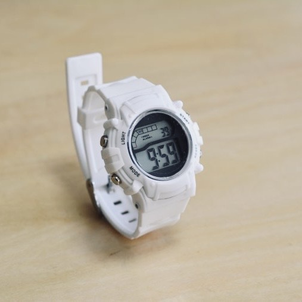

Thoughts on How to Coexist with AI💭

Talking about AI often leads to debates… It’s the kind of era we live in. People seem to be split into two camps: those who feel uncomfortable with it on a physiological level, and those who are relentlessly chasing after technological advancement.
I’m in the middle.
I believe that the healthy approach for humans is to let AI assist with things we can’t do ourselves, rather than relying on it for everything.
In the past, home appliances would work when you pressed a button, and stop when you turned them off. The concept of standby power didn’t exist. Over time, the concept of standby power was introduced, and it became normal for plugs to remain plugged in all the time. Technology evolves quickly. But AI is not just another household appliance anymore. It brings about the concept of "thinking and predicting."
Now we live in a time when it’s possible to say, "Hey! ◯◯ (AI), set the temperature of my room to a comfortable level when I get home! Also, order pizza for dinner and make sure it’s delivered! And book my gym appointment for 10 a.m. tomorrow!" all through our smartphones.
But doesn’t that make us, as human beings, regress? In the end, we might end up like primates. If we reduce the effort of thinking for every little task, it doesn’t matter if we still have the physical form of humans—we’ll be in a society where we can’t think for ourselves, no matter how much we learn. Furthermore, communication fees, device costs, and subscription charges are only going to increase. At some point, I realized that I’m the type who wants to keep using old things, customizing them if possible, until they break. That’s why I use an old iPhone with small storage.
So, I think it’s best to do what you can on your own and only ask for assistance in areas where you truly need it. Using technology only when necessary, turning it on and off, is healthier for developing a more balanced human experience. I don’t deny AI, but I think going too far with it is unhealthy.
Over time, "It’s so troublesome!" "I want to save time!" "It has to be cost-effective!" has become the norm in society.
When it comes to coexisting with AI, I see it as a partnership, but we must not become overly dependent on it. I believe that if we maintain this balance, we’ll develop a sense of gratitude toward machines and take better care of them.